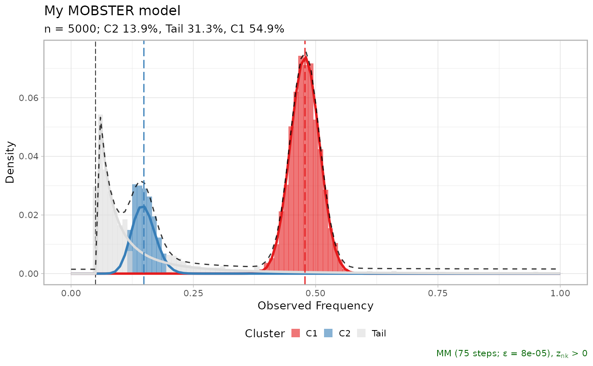

Data from an example MOBSTER fit; this object is the result of running `mobster_fit` function on the input dat.a The ouput is a list which contains the best fit, the top runs and a table summarising the fit scores. The input data has been simulated with a stochastic branching process model.
data(fit_example)
Output from `mobster_fit`.
#>#> C1], 31% [Tail], and 14% [C2], with π > 0.#>#> C1 [n = 2784, 55%] with mean = 0.48.#> C2 [n = 846, 14%] with mean = 0.15.#> ℹ Score(s): NLL = -5671.5; ICL = -10359.09 (-11266.35), H = 907.26 (0). Fit converged by MM in 75 steps.